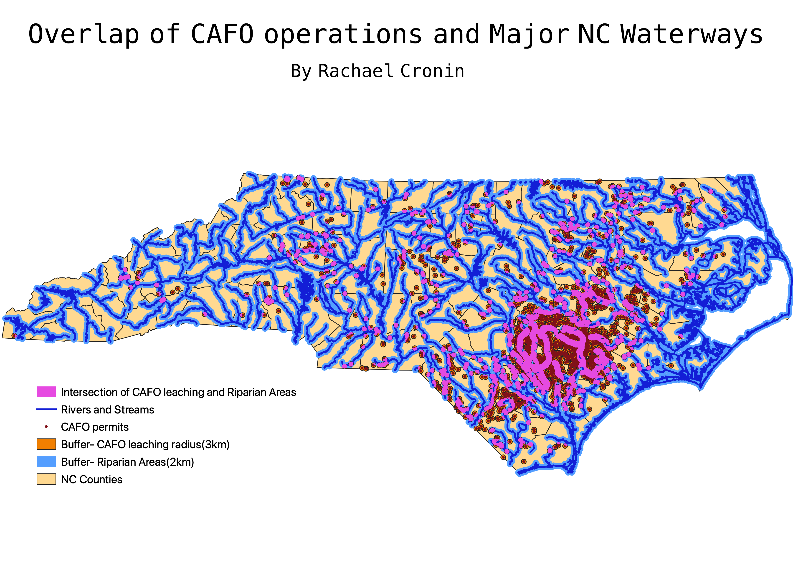

Homework 8: Vector Geoprocessing Analysis
Rachael Cronin
I chose to answer the research question "What is the extent of the overlap of CAFO pollution leaching areas and major waterways?". I found information for the location of industrial CAFO permits in NC and created a buffer around them of 3km to account for the pollution leaching through the soil. I then found the major rivers and streams of NC and created a buffer around them of 2km to account for smaller waterways/drains/runoff that might affect how certain materials are transported into rivers. I then created an intersection between these two buffers to see the overlap in manure leaching boundaries and riparian buffer zones. I did this to demonstrate how pollution from industrial animal agriculture enter our waterways. There is significant overlap between these two buffer areas, which indicates that the extent to which industrial animal agriculture can negatively affect our waterways is quite large.

Data for this Homework
CAFO Permit Locations geoJSON
Link to CAFO permit locations source
Riparian Areas Buffer geoJSON
Link Major Waterways source
Intersection of Rivers and CAFOs geoJSON
Link to NC counties polygon
Link to NC county shapefile source